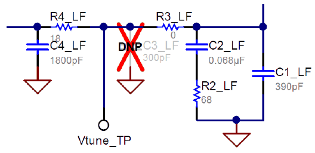

把实装 EVM 滤波器放进 Bode 图
TI 的 15 GHz 滤波器设计点使用 200 MHz PFD、有效 CP 电流 15 mA、VCO 增益 132 MHz/V，以整数工况 N=75 计算。先看 C1、串联 R2–C2 和经 R4 到 C4 的三个支路。蓝线使用两节点网络，橙线仅保留 R2–C2，两个模型均用同一增益和分频。


蓝：实装网络；橙：二阶近似
先找开环 0 dB 交越，再在该点读相位裕量。闭环 −3 dB 带宽从闭环曲线单独读。手册表列环路带宽 285 kHz、相位裕量 65°；本页把开环交越、厂家列出的带宽和闭环 −3 dB 分别列出。简化器件模型未包含板级寄生及芯片内部动态，复算结果用于读 Bode 图和比较滤波器拓扑。